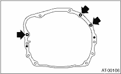
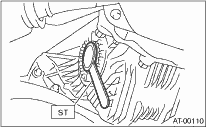
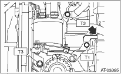
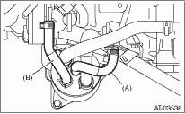

1. Replace the differential side oil seal with a new part. 
2. Install the rear cushion rubber to the transmission.
Tightening torque:
39 N·m (4.0 kgf-m, 29 ft-lb)
3. Attach the ST to the converter case.
| ST 498277200 | STOPPER SET |
4. Install the transmission onto the engine.
(1) Lift-up the transmission gradually using transmission jack.
(2) Insert the stud bolt on the engine side into the transmission bolt hole.
(3) While lifting-up the transmission jack gradually, turn the screw of engine support, and then tilt the engine forward to joint them together.
5. Install the transmission rear crossmember.
Tightening torque:
T1: 35 N·m (3.6 kgf-m, 26 ft-lb)
T2: 70 N·m (7.1 kgf-m, 51.6 ft-lb)

6. Remove the transmission jack.
7. Tighten the bolts and nuts which hold lower side of transmission to engine.
Tightening torque:
50 N·m (5.1 kgf-m, 37 ft-lb)
8. Tighten the bolt of the clutch housing cover.
9. Lower the lift.
10. Connect the engine and transmission.
(1) Remove the ST from converter case.
NOTE:
When removing the ST, be careful not to drop it into converter case.
| ST 498277200 | STOPPER SET |
(2) Tighten the bolts which hold the right upper side of the transmission to engine.
Tightening torque:
50 N·m (5.1 kgf-m, 37 ft-lb)

11. Install the torque converter clutch assembly to the drive plate.
CAUTION:
• Be careful not to damage the mounting bolts.
• Be careful not to drop bolts into the converter case.
(1) Tighten the bolts which hold torque converter clutch assembly to the drive plate.
(2) Tighten all the bolts by rotating the crank sprocket a little bit at a time.
Tightening torque:
25 N·m (2.5 kgf-m, 18.1 ft-lb)

(3) Fit the plug to service hole.
12. Install the starter.
13. Remove the ST.
14. Install the engine harness bracket. (Non-turbo model)
Tightening torque:
T1: 16 N·m (1.6 kgf-m, 11.6 ft-lb)
T2: 36 N·m (3.6 kgf-m, 26.0 ft-lb)
15. Install the harness connector to engine harness bracket, then connect the harness.
16. Install the pitching stopper bracket.
Tightening torque:
41 N·m (4.2 kgf-m, 30.4 ft-lb)
17. Install the throttle body.
18. Install the pitching stopper.
Tightening torque:
T1: 50 N·m (5.1 kgf-m, 37 ft-lb)
T2: 58 N·m (5.9 kgf-m, 43 ft-lb)

19. Lift the vehicle.
20. Replace the circlip of the front drive shaft with a new part.
21. Apply grease to the oil seal lip.
22. Attach the ST to side retainer.
| ST 28399SA010 | OIL SEAL PROTECTOR |

23. Align the spline portion of front drive shaft with the serration of the differential bevel gear to insert, and remove the ST.
| ST 28399SA010 | OIL SEAL PROTECTOR |
24. Insert the front drive shaft into transmission securely by pressing the front housing.
25. Connect the ball joint to the front housing.
26. Tighten the attachment bolts.
Tightening torque:
50 N·m (5.1 kgf-m, 37 ft-lb)
27. Attach the stabilizer link to the transverse link.
Tightening torque:
45 N·m (4.6 kgf-m, 33 ft-lb)
28. Install the shift select cable onto select lever.
29. Connect the ATF cooler hoses to the pipe.

30. Install the ATF level gauge guide.
31. Install the propeller shaft.
32. Install the rear exhaust pipe and muffler assembly.
(Non-turbo model)
(Turbo model)
33. Install the front and center exhaust pipe. (Non-turbo model)
34. Install the center exhaust pipe. (Turbo model)
35. Install the under cover.
36. Lower the lift.
37. Install the ATF cooler assembly to the transmission. (Models with ATF cooler (with warmer feature))
NOTE:
Insert the tip of the ATF cooler bracket to the hole of the converter case.
Tightening torque:
T1: 21 N·m (2.1 kgf-m, 15.5 ft-lb)
T2: 23 N·m (2.3 kgf-m, 17.0 ft-lb)
T3: 33 N·m (3.4 kgf-m, 25 ft-lb)

38. Connect the ATF cooler hose to the transmission side pipe, and attach the oil charge pipe. (Models with ATF cooler (with warmer feature))

|
(A) |
ATF inlet hose |
|
(B) |
ATF outlet hose |
39. Install the ATF level gauge.
40. Connect the following connectors.
(1) Transmission harness connectors
(2) Transmission ground terminal
41. Attach the harness to the bracket.

42. Install the air cleaner case stay. (Non-turbo model)
Tightening torque:
16 N·m (1.6 kgf-m, 11.6 ft-lb)
43. Install the air intake chamber. (Non-turbo model)
44. Install the intercooler. (Turbo model)
45. Connect the battery ground cable to the battery.
46. Pour ATF through the oil charge pipe.
47. Check the ATF level.
48. Lower the vehicle from the lift.
49. Check the select lever operation.
50. Execute the learning control promotion.
51. Perform the road test.